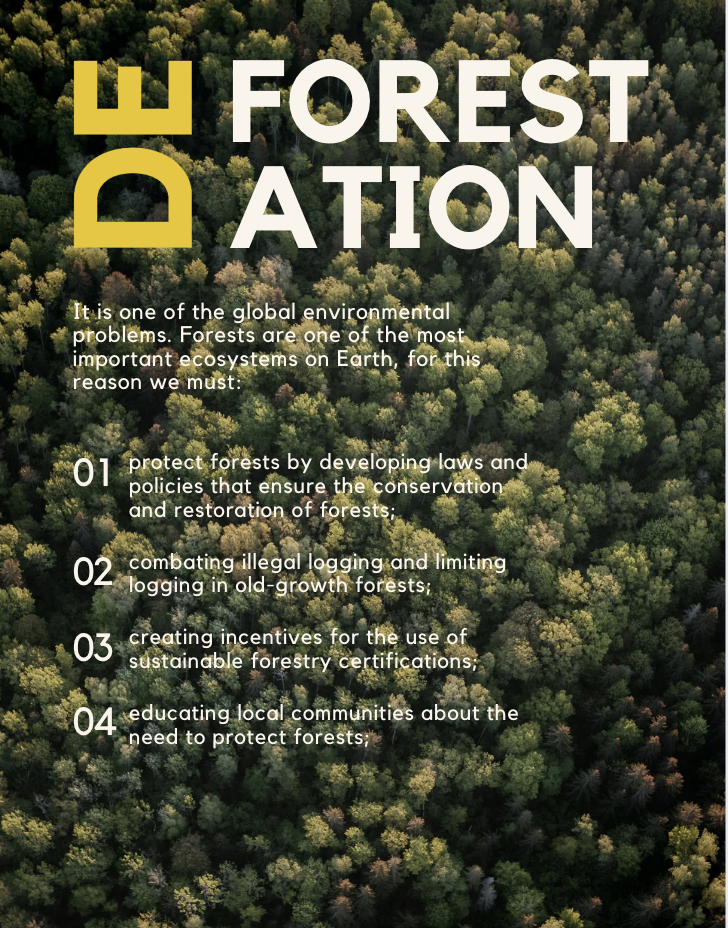
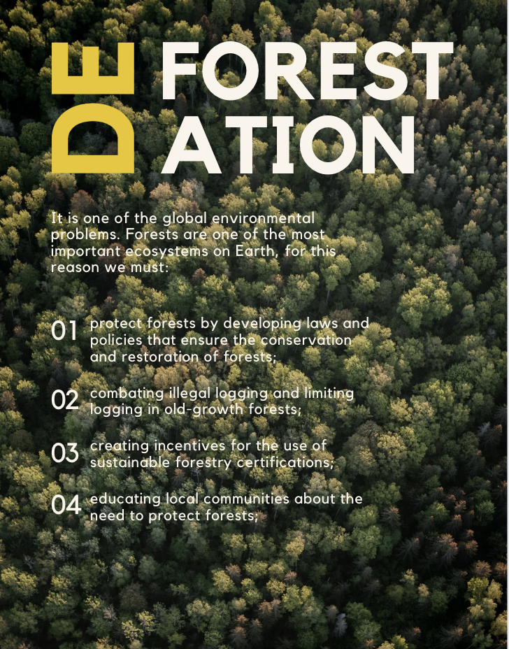
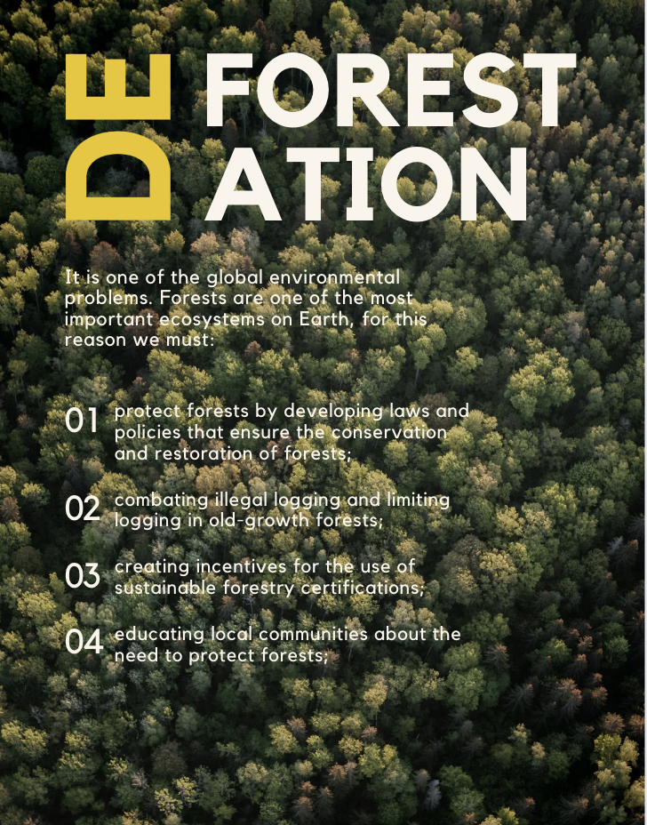

Our Posters
Check out our posters that raise awareness about deforestation:


 

G-Aware is dedicated to spreading awareness about deforestation in the Aravali region. Join us in our mission to protect our forests!
So we are a group of people who want to create generate amongst the people about the deforestation happening around the world. We are starting off in a smaller scale telling people living in aravali hills about deforestation over there. This can create awareness and they can use methods like afforestation. We are working by making posters and websites also creating videos and taking interviews. add this also
Check out our posters that raise awareness about deforestation:

The Aravali region is one of the oldest mountain ranges in India and is crucial for maintaining ecological balance. However, it faces severe deforestation due to urbanization, mining, and agricultural expansion. Here are some key facts: